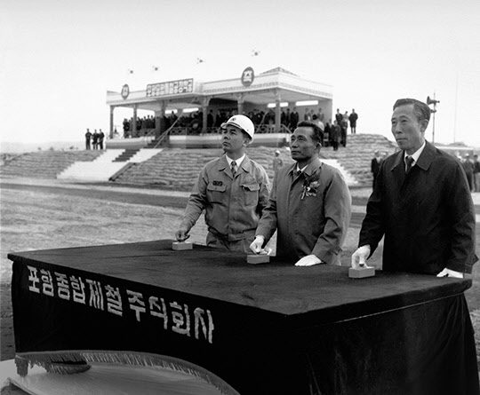
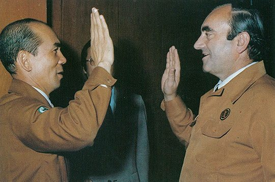
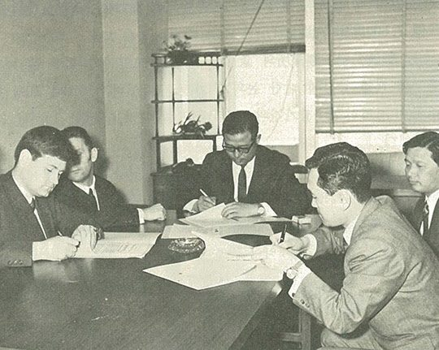
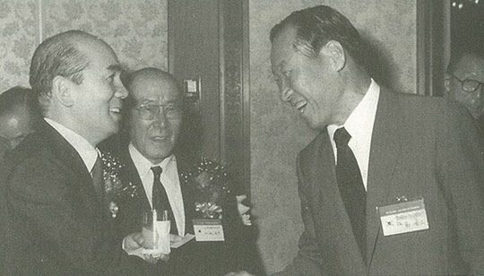

보도일 2014-01-19출처 조선일보 프리미엄조선 연재
1970년 4월 1일 오후 3시. 영일만 모래벌판에서 천둥 같은 폭발음과 함께 오색찬란한 연기가 피어오르고, 지반을 다지기 위해 항타기로 파일을 두들겨 박는 굉음이 요란하게 울려 퍼졌다. 1961년부터 박정희가 꿈꿔온 종합제철, 그로부터 십년간 숱한 고난과 시련을 헤쳐 나온 포항종합제철 착공식. 한국 건설현장 착공식에서 최초로 선보인 파일 항타에서 버튼을 누른 사람은 셋이었다. 박정희 대통령, 김학렬 부총리, 박태준 사장.

박정희의 기념사는 웅대한 포부, 그 자체였다. “공업국가 건설에 선행돼야 할 근간산업 중 철강산업이 가장 중요한 분야”라는 사실을 강조하고 “공업국가 건설을 위해서는 온 국민이 총역량을 집중해야 하며, 포항종합제철은 73년까지 103만 톤 규모의 공장을 예정대로 완공하면 계속 확장하여 70년대에 1000만 톤 규모까지 생산 능력을 갖추기 바란다”고 역설했다.
‘포항제철 1000만 톤’이라는 박정희의 비전을 받아 연단에 오른 박태준은 “민족중흥의 기틀”을 놓겠다는 각오로써 포스코의 ‘존재 이유’를 천명했다. 그것은 사원들과 우리 국민, 그리고 박정희를 향한 약속이었다.
“종합제철 건설은 바로 우리가 비축했던 민족역량의 결정일 뿐만 아니라, 강력한 국민 의지의 발현이며 우리의 오랜 꿈을 현실화하는 가교가 될 것”이라며 “훌륭한 공장을 최소 비용으로 건설하고, 완벽한 조업준비 자세로서 공장가동 시점에서 바로 정상조업에 돌입해야 하며, 보장된 품질의 철강재를 원활히 공급하겠다”고 당당히 밝혔다.
공장부지 232만 평에 주택단지와 연관단지 부지를 합하면 389만 평. 그 엄청난 단군 이래 최대 역사(役事)가 마침내 파일 박기를 시작하자 국내 언론의 태도도 완전히 달라졌다. 가난한 한국이 KISA에 배반당했을 때는 ‘무리한’ 추진이라고 비판했으나, 대역사의 막이 오른 현장을 지켜보며 ‘희망찬’ 미래를 예견했다.
성공이냐 실패냐. 포스코라는 거대한 열차를 성공으로 이끌어나갈 레일은 이미 깔려 있는 것이나 마찬가지였다. 그러나 사람들의 눈에는 띄지 않는 레일이었다. 박태준의 ‘우향우’와 그 정신으로 똘똘 뭉친 포스코의 일꾼들, 그리고 그들을 옹호하는 박정희의 신뢰―이것이 보이지 않는 두 레일이었다.
종합제철소 건설 방식에는 크게 전방방식과 후방방식이 있다. 전방방식은 제조 과정과 동일하게 제선공장(고로)과 제강공장을 먼저 지은 뒤에 압연공장을 세우며, 후방방식은 압연공장을 먼저 짓고 제강공장과 제선공장을 뒤에 세운다. 압연공장을 먼저 세우는 후방방식은, 쇳물이 나오기 전부터 반제품인 슬래브를 들여와서 완제품의 압연강판을 생산할 수 있다. 철강공급과 회사수익을 훨씬 앞당길 수 있는 길이다. 이 장점을 주목한 박태준은 후방방식을 택했다.

그러나 후방방식을 실현하는 데는 ‘조상의 혈세’가 아닌 별도의 큰돈을 외국에서 들여와야 했다. 수입한 슬래브를 완제품으로 가공할 중후판공장 건설. 여기엔 2500만 달러 상당의 새로운 외자가 필요했다. 유일한 해결책은 외국의 유명한 제철설비 업체를 불러들이는 것. 박태준은 오스트리아의 푀스트 알피네를 파트너로 잡았다.
1970년 6월 23일 포스코 사장과 푀스트 알피네 사장은 영일만의 ‘중후판공장 건설 기본계약’에 서명했다. 이때 투자 결정을 내렸던 오스트리아 국립은행 총재 헬무트 하세는 박태준과의 협상에 대해 다음과 같은 회고를 남긴다.
<세계의 모든 철강인들이 과연 포철이 성공리에 건설될 수 있을까에 대해 반신반의하고 있던 때였습니다. 그러나 우리는 매우 큰 규모의 차관을 포철에 제공하기로 결정했습니다. 일부 사람들은 우리의 결정을 마치 자살행위로 보는 듯했어요. 박태준은 매우 끈기 있는 사람입니다. 모든 상황이 불리한 여건에서의 협상이란 피곤하기 마련입니다만, 그는 나를 꾸준히 설득하여 우리가 포항제철 1기 공사에서 큰 역할을 하도록 했습니다.>

중후판은 주로 선박 건조에 쓰는 철강재다. 1972년 7월에 완공될 영일만의 중후판공장에 제일 먼저 눈독을 들인 한국 기업인은 정주영 현대 회장이었다. 어느 날 그가 박태준에게 만나자고 했다.
“조선소를 만들 생각입니다. 어디가 좋겠습니까?”
박태준은 선배의 선견지명에 반색을 했다.
“좋은 생각입니다. 후판은 굉장히 무거운데, 바다로 날라야 합니다. 물류원가도 절감해야 하니, 울산 정도면 적당할 겁니다. 울산이면 포항에서 바지선으로도 실어 나를 수 있는 위치입니다.”
“고맙소. 일류제품을 만들 거라고 믿어요.”
“물론입니다. 서로 도움이 돼야지요.”
포스코는 단골고객을 확보하고, 현대는 양질의 값싼 철판을 안정적으로 확보하는 만남이었다. 한국 중공업이 웅비의 날개를 준비하는 자리이기도 했다. 박태준이 선견지명이라고 표현했을 만큼 정주영과 조선소 얘기를 처음 나눈 그때는 몰랐다가 나중에 그도 듣게 되지만, 정주영이 박태준을 찾아왔을 때는 이미 청와대로 불려가서 박정희에게 혼쭐난 다음이었다.
정주영은 부총리 김학렬에게서 ‘조선업을 하라’는 권유를 받고 차관 도입을 위해 일본, 미국으로 돌아다녔으나 ‘정신 나간 사람’이란 푸대접만 당했다. 그래서 김학렬을 찾아가 기권할 수밖에 없다고 밝혔다. 이 보고를 들은 박정희가 정주영을 불러 단단히 야단을 쳤다. 한 나라의 대통령과 경제부총리가 적극 지원하겠다는데 그거 하나 못하느냐면서 무슨 일이 있어도 어떻게 하든 해내라고 몰아세운 것이었다.
머잖아 포철이 양질의 후판을 생산할 것이니 때를 맞춰서 반드시 선진국 규모의 조선소가 태어나야 한다. 이것이 박정희의 양보할 수 없는 판단이었다.
정주영의 현대는 1972년 3월 울산에서 조선소 건설을 착공했다. 건설에 3년 걸리는 도크와 역시 3년 남짓 걸리는 선박 건조를 동시에 시작한, 세계 조선업계의 기존 상식을 뛰어넘는 ‘정주영다운’ 방식으로….
